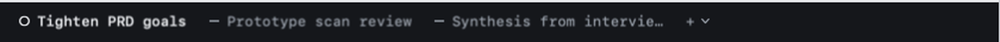
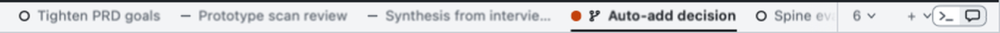
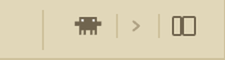

New Claude session and new shell: what v2 has, and what v1 had
v2 today · the console strip (terminal), 2×

v2 today · the thin light strip over chat, with the Terminal / Chat toggle at its right, 2×

v1 · the tab strip's cluster, 2×

v2 (surfaces-handoff §139)
+
is a text character that starts a Claude session; the chevron beside it opens a native menu: New Claude Session ⌘T, New Shell ⇧⌘T.
A shell takes two clicks and a menu. Nothing says “Claude” until you open the menu.
The Terminal / Chat toggle sits at the strip's far edge: two 26×20 segments in a 1 pt border, radius 6.
v1 (ENH-044, TabBar.tsx)
One cluster:
Clawd
(new Claude session) |
›
(new shell) | collapse the terminal column. One click each, no menu.
Clawd is your own Inkscape drawing, 14×9, in the strip's text colour, eyes cut out (“should not be orange”).
Tooltips named the chords and the folder: “New Claude session (⌘T) · in Garden Planner”.